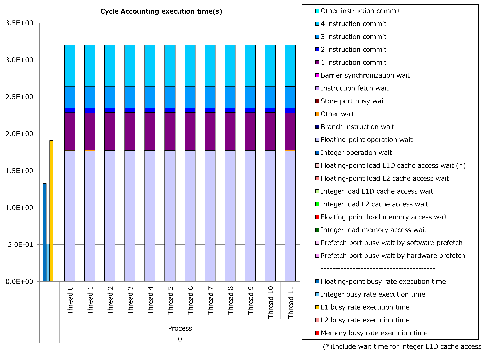
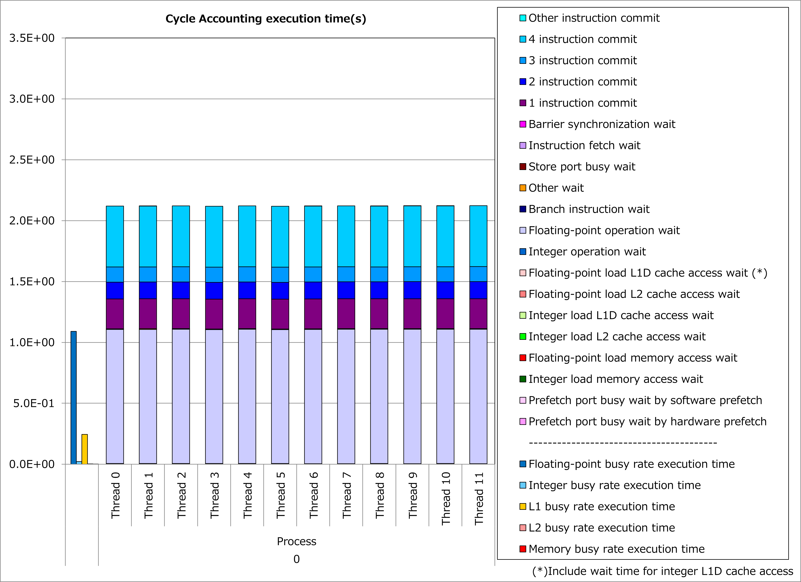

4.2. AoS型多次元配列の次元入れ替え¶
4.2.1. 動機¶
Array of Structures (AoS)は例えば以下のように、構造体(C言語の場合)を並べて配列の形にしたデータレイアウトです。
struct Particle {double x; double y; double z;};
struct Particle particles[N];
{kind=link}
AoS配列のメモリ格納順序¶
このデータ構造は多次元配列を用いて以下のようにも表現できます。
real, dimension(3,N) :: particles_aos
{kind=link}
AoS型2次元配列のメモリ格納順序¶
ところで、この例でNが3よりも十分大きい場合、大きさNの次元に対応するループをSIMD化するほうがコンパイラによる最適化が促進され、実行性能面で有利と期待されます。 しかしこの多次元配列は大きさNの次元が1次元目(Fortran言語の場合)でないため、 先の例 と同様に配列アクセスが非連続的になり、プロセッサのキャッシュアクセス負荷が高くなります。
そこで、この多次元配列の1次元目と2次元目を入れ替え、以下のようなStructure of Arrays (SoA)のデータレイアウトとすることによって、大きさNの次元に対応するループを SIMD化した場合のキャッシュアクセス負荷を軽減 できます。
real, dimension(N,3) :: particles_soa
{kind=link}
SoA型2次元配列のメモリ格納順序¶
その結果、プロセッサのキャッシュアクセス負荷を抑えつつ、コンパイラによる最適化を促進させて、実行時間を短縮できる可能性があります。
4.2.2. 適用例¶
A64FX向けチューニング技術検討会 で示されたコード例を用いて、性能改善の例を以下に示します。 この例では、一時配列x、y、zおよびmを導入し、変数jのforループにおいてAoS型配列bodyに対する非連続的なアクセスを一時配列に対する連続的なアクセスに置き換えています。
for(int i=0; i<n; i++){
const float xi=body[i].x, yi=body[i].y, zi=body[i].z;
float ax=0, ay=0, az=0;
for(int j=0; j<n; j++){
float dx = xi - body[j].x;
float dy = yi - body[j].y;
float dz = zi - body[j].z;
float r2 = eps2 + dx*dx;
r2 += dy*dy;
r2 += dz*dz;
float ri = 1.f / sqrtf(r2);
float mri = body[j].m * ri;
float ri2 = ri * ri;
float mri3 = mri * ri2;
ax -= mri3 * dx;
ay -= mri3 * dy;
az -= mri3 * dz;
}
acc[i] = {ax, ay, az};
}
float x[n], y[n], z[n], m[n];
#pragma loop norecurrence
for(int i=0; i<n; i++){
x[i] = body[i].x;
y[i] = body[i].y;
z[i] = body[i].z;
m[i] = body[i].m;
}
for(int i=0; i<n; i++){
const float xi=body[i].x, yi=body[i].y, zi=body[i].z;
float ax=0, ay=0, az=0;
for(int j=0; j<n; j++){
float dx = xi - x[j];
float dy = yi - y[j];
float dz = zi - z[j];
float r2 = eps2 + dx*dx;
r2 += dy*dy;
r2 += dz*dz;
float ri = 1.f / sqrtf(r2);
float mri = m[j] * ri;
float ri2 = ri * ri;
float mri3 = mri * ri2;
ax -= mri3 * dx;
ay -= mri3 * dy;
az -= mri3 * dz;
}
acc[i] = {ax, ay, az};
}
改善前および改善後コードのサイクルアカウンティング測定結果を下記グラフに示します。 なお、性能測定条件は以下のとおりです。
n = 2048
改善前(左のグラフ)に対して改善後(右のグラフ)の測定結果では、L1Dキャッシュビジー時間が大幅減少し、実行時間が34%減ったことが分かります。 なおこの例では、配列アクセスの結果に依存し連鎖する演算が多く含まれるために、キャッシュアクセス待ち時間よりも浮動小数点演算待ち時間が顕在化していると考えられます。
 {kind=link}
{kind=link}
4.2.3. 実例¶
A64FX向けチューニング技術検討会 にて、この種の事例が以下のとおり紹介されています。
4.2.4. 参考資料¶
注意: 上記ドキュメントの参照には スーパーコンピュータ「富岳」利用者ポータル のアクセス権が必要です。